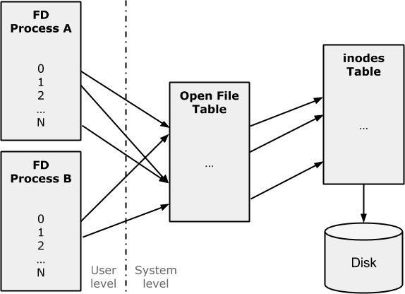

Session 2
Introduction to Linux programming

Source files
UNIX development
- C / C++ Linux software development is based on the GNU
gcc&g++compilers - The C / C++ Linux compilers are command-line ones, therefore there is not any GUI to ease code programming and compilation
- There are GUI-based IDEs (Integrated Development Environments) like KDevelop, that integrate all the necessary development tools (compiler, debugger, ...)
The gcc compiler
Syntax:
$ gcc ficfonts.c -g -c file.c -o fileExec
-I <dirIncludes> -L <dirLibs> -l <library>
- Where:
-g: Generates debugging information-c: Link only the specified file-o: Output executable file (defaults toa.out)-I: Directories where .h files will be searched-L: Directories where libraries will be searched-l: Library to be linked with the program
The gcc compiler
Examples:
# Compile and link the source.c file, getting a a.out executable:
$ gcc source.c
# Compile and link the source.c file, getting a myExe executable:
$ gcc source.c -o myExe
# Compile only the source.c file, getting a source.o object:
$ gcc -c source.c
# Link the object files main.o and file1.o getting the main executable:
$ ld main.o file1.o -o main
# Compile and link the file source.c, adding definitions.h,
# that is in the /usr/local/include directory,
# and the libfont.so library getting a myExe executable:
$ gcc -g source.c -o myExe -I /usr/local/include -i definitions.h \
$ -L /usr/local/lib -lfont
make
- The
makecommand is used to organize the linking and compiling steps of complex programs that have several different modules or libraries - When this command is executed, a new executable file is created compiling only the modified files since the last compilation
- A
makefilefile must be created, that specifies the dependencies between different files and the linking and compilation method - Syntax:
$ make [-f makefile_name] [-arg_opt] [exe_name]
make
makefilefile:
main2: main2.o reverse.o statistic.o
gcc main2.o reverse.o statistic.o -o main2
main2.o: main2.c statistic.h
gcc -c main2.c
reverse.o: reverse.c reverse.h
gcc -c reverse.c
statistic.o: statistic.c statistic.h reverse.h
gcc -c statistic.c
Execution:
$ make
gcc -c main2.c
gcc -c reverse.c
gcc -c statistic.c
gcc main2.o reverse.0 statistic.o -o main2
Debugging
- To debug Linux programs, GNU provides a command-line debugger called
gdb - The
xxgdbprogram provides a GUI for this debugger:
$ xxgdb myExe &
- However, to debug complex programs formed by multiple processes, these debuggers may be extremely difficult to use
- In these scenarios, we can print log messages to the standard output:
fprintf(stdout, "Current line: x=%d, y=%d.\n", x, y);
fflush(stdout);
- It is important to call
fflush(stdout)to ensure that the buffer is flushed and its content printed
Error control
- Some system and library calls use the
errnoglobal variable, defined in theerrno.hlibrary, to identify the cause when there is an error - This variable value is relevant only when the call returns an error (usually the
-1code) - For more information:
$ man errno - A descriptive error message identified by
errnocan be seen using theperrorfunction of the<stdio.h>library:
void perror(const char*);
- First the message is shown and then the error:
perror("My message");
My message: No such file or directory
Pointers
- A pointer is a variable that contains a memory address
- Usually, this address is the position of another variable. In this case, it is said that the first variable points to the second one
#include <stdio.h>
#include <stdlib.h>
void main() {
int num = 5;
int *p;
p = #
printf("Num: %d, &p: %p, *p: %d\n", num, p, *p);
exit(0);
}
Pointers
- Syntax:
<element type> *<point variable name>;
- Examples:
char *pname; // Pointer to char
int *page; // Pointer to int
float *pheight; // Pointer to float
struct userData *pdata; // Pointer to struct
void *pgeneric // Pointer to any type
Pointers
- The operators that can be used with pointers are:
*: Returns the contents of a variable or operand&: Returns the memory address of the operand->: Allows to access the fields of a struct from its pointer
Pointers
- The operations with pointers:
- Assignation (
=): Assigns an address to a pointer - Comparison (
==,!=): Equality or inequality - Initialization (
NULL): Indicates that the pointer contains no address - Increment (
++), decrement (--): Change a pointer to the next / previous element of a series (for example, an array) - Indexed (
[]): Access to the n element of a series
- Assignation (
Pointers
#include <stdio.h>
void main() {
int n1, n2; int *p1, *p2;
n1 = 3; n2 = 10; p1 = p2 = NULL; // variable initialization
p1 = &n1; p2 = &n2; // p1 points to n1 and p2 points to n2
if(p1 != p2) {
printf("p1 and p2 point to different memory positions\n");
printf("Content of p1 is: %d\n", *p1);
printf("Content of p2 is: %d\n", *p2);
}
p2 = p1;
if(p1 == p2) {
printf("p1 and p2 point to the same memory position\n");
printf("Content of p1 and p2 is: %d\n", *p1);
}
}
Pointers
About common errors in pointers usage:
- Do not use uninitialized pointers (no valid address or
NULLvalue) - Ensure that the pointer points to a valid address before using it and initialize with a
NULLvalue the ones that do not have an assigned address yet /* Incorrect version */ #include <stdio.h> int main() { int x; int *p; x = 10; *p = x; }/* Correct version */ #include <stdio.h> int main() { int x, y, *p; p = NULL; x = 10; y = 20; if(p == NULL) p = &x; *p = y; }
Dynamic memory management
- The dynamic memory allocation allows to create variables during the program execution
- The necessary space for these variables is obtained from the available memory
- The functions that allow the dynamic allocation are
malloc()andfree() - Each time a memory request is done via
malloc(), a portion of the available memory is assigned. - When the
free()function is called, the memory is released
Dynamic memory management
mallocsyntax:<pointer_var> = malloc(<memory_block_size>);
Example:
char *string;
string = (char *) malloc(80 * sizeof(char));
- As
malloccan allocate memory for any type of variable, the returned type isvoid*, that is, pointer to any type - The returned value can be assigned to any pointer by doing a cast when doing the assignation
freesyntax:free(<pointer_var>);
Example:
free(string);
Dynamic memory management
About common errors in dynamic memory management:
- Do not reassign a pointer memory space reserved with a
mallocwithout having previously released it with thefreefunction - Do not release memory using the
freefunction if it was not previously reserved withmalloc - Remember the difference between a pointer (
p) and its contents (p*)
Argument passing
- There are two ways of passing parameters to a function: call by value and call by reference
- When using call by value, any modification done to the argument will not affect the original variable value. So it is like working with a copy, not the original
- When using call by reference:
- It is sent to the function the memory address where the variable or data is located. This does allow to change values to the original variables.
- To do a call by reference the
&symbol is used before the variable name. This tells the compiler that the function will need to obtain the memory address where the variable is located - Parameters sent by reference are declared as pointers to receive the memory address of the variable
Argument passing
Call by reference example:
#include <stdio.h>
void exchange(int *, int *);
void main() {
int a=1, b=2;
printf("a = %d and b = %d\n", a, b);
exchange(&a, &b);
printf("a = %d and b = %d\n", a, b);
}
void exchange(int *x, int *y) {
int aux; aux = *x;
*x = *y;
*y = aux;
printf("Function: a = %d and b = %d\n", *x, *y);
}
Files
- A file is a contiguous sequence of bytes
- The OS does not specify / impose any specific format
- Each byte can be addressed individually to a file on disk
- A file descriptor is a positive integer specific for each process, used to identify an open file that can be accessed
- The system call to open a file
open()returns a file descriptor, an integer value- This descriptor must be used in the next file input / output operations
- All files opened by an application are automatically closed when the process ends
Files
- The file descriptors for any process are:
| Value | Meaning | Default |
|---|---|---|
| 0 | Standard input (keyboard) | Yes |
| 1 | Standard output (screen) | Yes |
| 2 | Standard error (screen) | Yes |
| 3 .. N | Descriptors available to users | No |
- By default all processes have the 0, 1 and 2 file descriptors when created
Files
File descriptors organization:

Files
UNIX system calls to work with files:
open(): Open files to read and/or write or to create themcreat(): Creates an empty fileread(): Reads information from a filewrite(): Writes information to a filelseek(): Go to a specific byte of the fileunlink(): Deletes a filefcntl(): Controls the attributes of a file
Files
Opening files:
#include <sys/types.h>
#include <sys/stat.h>
#include <fcntl.h>
int open(const char *path, int flags [, mode_t mode]);
int creat(const char *path, mode_t mode);
- Creates / opens a file and returns its descriptor.
Files
- Parameters:
path: String with the relative or absolute path to the fileflags: File open method- O_RDONLY - read only
- O_WRONLY - write only
- O_RDWR - read and write
- O_CREAT - creates the file if it doesn't exist
- O_TRUNC - if it exists, opens it and truncates to 0 bytes
- O_APPEND - write to the end of the file
mode: Specifies permissions if new file is created (0644 → -rw-r--r--)
open()andcreat()return the new file descriptor, or they return -1 if there has been any error
Files
Closing files:
#include <unistd.h>
int close(int fd);
- Closes a file descriptor so it no longer references any file
- Parameters:
fd: File descriptor of the file that will be closed
close()returns 0 if successful and -1 if error
Files
File reading:
#include <unistd.h>
ssize_t read(int fd, void *buf, size_t nbytes);
- Tries to read up to
nbytesbytes from the file specified byfdand store them in the memory area that starts inbuf - Parameters:
fd: File descriptor of the file that will be readnbytes: Number of bytes to be readbuf: Pointer to the buffer where the read information will be saved
- Returns:
- If successful, returns the number of read bytes (0 means end of file)
- If error, returns -1 and specifies the reason in
errno
Files
#include <fcntl.h> // Open modes
#include <stdlib.h> // File functions
#include <stdio.h> // Standard I/O
void main(int argc, char* argv[]) {
char string[11]; int b_read;
int file = open ("my_file", O_RDONLY);
if(file == -1) { // Check for errors
perror("Error while opening file"); exit(1);
}
lseek(file, 400, SEEK_SET);
b_read = read(file, string, 10); // Read 10 bytes
close(file);
string[10] = 0;
printf("%d B have been read. The obtained string is: %s\n", b_read, string);
return 0;
}
Files
File writing:
#include <unistd.h>
ssize_t write(int fd, const void *buf, size_t nbytes);
- Tries to write up to
nbytesbytes to the file specified byfdand from the memory area that starts inbuf - Parameters:
fd: File descriptor of the file that will be writtennbytes: Number of bytes to be writtenbuf: Pointer to the buffer where the information to be written is located
- Returns:
- If successful, returns the number of written bytes (0 means nothing was written)
- If error, returns -1 and specifies the reason in
errno
Files
#include <string.h> // strlen() function
#include <fcntl.h>
#include <stdlib.h>
void main(int argc, char* argv[]) {
const char* string = "Winter is coming";
int file = open("my_file", O_CREAT|O_WRONLY, 0644);
if(file == -1) {
perror("Error when opening file");
exit(1);
}
write(file, string, strlen(string));
close(file);
exit(0);
}
Files
Change the read / write location:
#include <sys/types.h>
#include <unistd.h>
off_t lseek(int fd, off_t offset, int whence);
- Move the pointer by
offsetbytes and following thewhencedirective, where:fd: File descriptoroffset: Relative pointer displacement in byteswhence: Displacement directive- SEEK_SET: the pointer is placed to
offsetbytes - SEEK_CUR: the pointer moves
offsetbytes from its current position - SEEK_END: the pointer moves
offsetbytes from the end of the file
- SEEK_SET: the pointer is placed to
- If successful, returns the absolute pointer position (in bytes)
- If error, returns -1 and specifies the reason in
errno
Files
#include <unistd.h>
#include <fcntl.h>
#include <stdlib.h>
char buf1[] = "abcdefghij";
char buf2[] = "ABCDEFGHIJ";
int main() {
int fd;
if((fd = creat("my_file", 0644)) < 0) { perror("my_file"); exit(-1); }
if(write(fd, buf1, 10) != 10) perror("buf1");
if(lseek(fd, 40, SEEK_SET) == -1) perror("lseek");
if(write(fd, buf2, 10) != 10) perror("buf2");
return 0;
}
<That's all!>